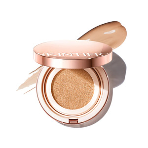
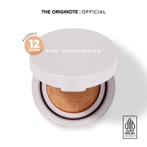
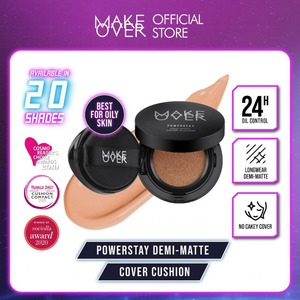
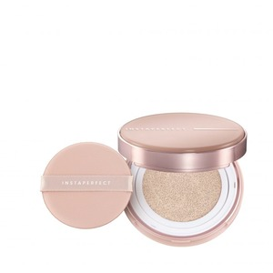
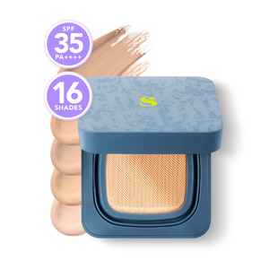
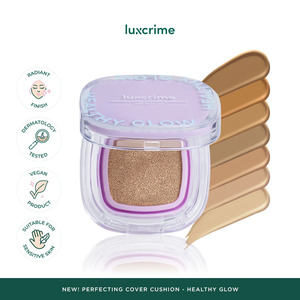
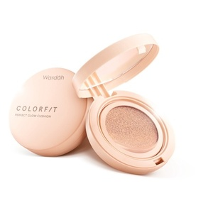
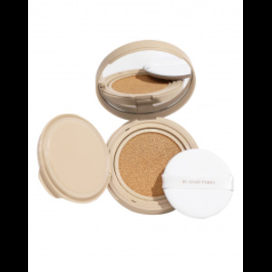
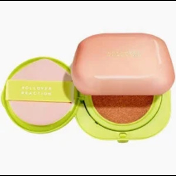
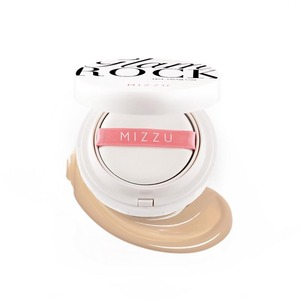

Skintific Cover All Perfect Cushion: Dikenal karena daya tutupnya yang tinggi dan formulanya yang tahan lama.

Originote High Cover Serum Cushion: Hasil akhir yang ringan dan berembun dengan cakupan sedang hingga penuh.

Make Over Powerstay Demi-Matte Cushion: Sempurna untuk kulit berminyak, memberikan hasil akhir matte.

Instaperfect Skincover Air Cushion: Hasil akhir alami dan bercahaya dengan cakupan sedang.

Somethinc Hooman Breathable Cushion: Cushion ringan dan mudah menyerap udara.

Luxcrime 2nd Skin Luminous Cushion: Hasil akhir bercahaya dan berembun.

Wardah Colorfit Perfect Glow Cushion: Pilihan populer dengan harga terjangkau.

BLP Beauty Cover Cushion: Hasil akhir alami dan lembap.

Rollover Reaction PLUMP! Skin-Loving Blurring Cushion: Cocok untuk kulit kering.

Mizzu Glam Rock Aqua Foundation: Hasil akhir yang ringan dan matte.